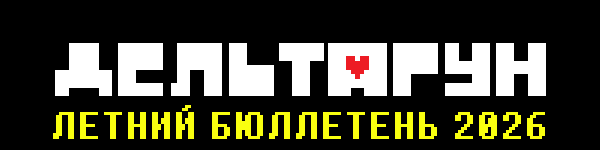
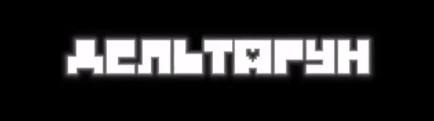
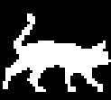

Ах, лето... Поскорее бы оно закончилось.


Где-то месяц назад вышла пятая глава ДЕЛЬТАРУНА.
Вы же заметили?..
Я был очень рад услышать отзывы на пятую главу. Мои друзья были в восторге, некоторые даже плакали. Все воспринимают игру по-своему, но если она тронула хоть немного людей, то я знаю, что двигаюсь в правильном направлении.
(Осторожно! Спойлеры по пятой главе!)

Пятая глава была очень весëлой, и раз уж мы разобрались с последней большой порцией безумия, я уверен, что все с нетерпением ждут, когда сюжет начнëт затрагивать главные тайны игры. Я тоже жду!
С концом пятой главы, необходимая база для шестой и седьмой главы подготовлена. В шестой главе и далее, больше не будет весëлых приключений, и вы начнëте видеть последствия ваших действий.
Шестая глава будет более короткой и прямолинейной, будет сосредоточена лишь на одном аспекте истории. Именно поэтому есть множество вещей, которые в ней не будут затронуты. Вы бы удивились, если бы знали, что осталось в секрете! Но кое-что будет раскрыто, готовы вы или нет.
Кто-то из вас скажет «Ты должен делать главы больше, а не меньше!», и это вполне резонно, но... Я уверен на 100%, что к концу седьмой главы вы поймëте, почему я рассказываю эту историю именно так. Не переживайте за темп, пока не увидите конец!
Я думаю, что у нас получится выпустить шестую главу в 2027.
(Шестая глава выйдет отдельно, если это было непонятно...)
Недавно я закончил писать несколько эпизодов последней трети шестой главы и в связи с этим пришлось переставлять некоторые комнаты. Когда мы сделаем последние штрихи и свяжем всë воедино, мы сможем пройти сырую версию шестой главы от начала до конца. Кроме больших перестановок, фокус разработки будет направлен на босса главы и полировку кат-сцен.

Я не смотрю и не читаю теории просто потому, что знаю всë о своей игре.
Но я считаю невероятным, что люди так много думают об игре. Не будет преувеличением сказать, что думать об этой игре это такой же невероятный опыт, как играть в неë. Все, кто продолжает о ней думать так же много, как и я, заслуживают моей высшей похвалы. Представлять, что может случиться, думать о замысле игры - это реально круто.
Но хочу отметить, что иногда у вас есть не вся информация, или же я рассчитывал, что она будет воспринята по-другому.
В любом случае, я думаю, что пока вы размышляете о том, что может произойти, вам стоит веселиться как можно больше.
Рисунки, истории, теории, которые вы создаёте во время разработки игры навсегда будут особенными, потому что это единственное время, когда такие вещи могут появиться. Все вы создаёте капсулу времени, уникальную для этого уходящего момента, и я считаю, что этим можно гордиться. Разве не классно, что вы играете в игру прямо пока она выходит?
Когда я был маленьким, мой старший брат говорил тупые фразы в стиле аниме, а потом начинал в шутку со мной драться. Одной из таких фраз была «Это моя Джарона!». Некоторые другие фразы тоже ссылаются на это, например неиспользованный фрагмент озвучки «Блинго буря!»
Мой брат хотел, чтобы я добавил в игру «Это моя Колибри!» как ещё одну фразу в игру, но я этого ещё не сделал. (И сделаю ли вообще?)


Кикки это моя кошка, которая никогда не затыкается. Она шумит каждую секунду, пока с ней не играют. Она видела комнату по телевизору и не поняла, что это. Как будто мозг кошки засунули в тело кошки. Песня в комнате это та песенка, которую я пою ей каждый день, потому что люблю её. Это не «Фансервис» для вас, а «Киккисервис» для неё, даже если он ей не нравится. Она мешает мне прямо сейчас.

На Fangamer вышел мерч по пятой главе. Планируется больше товаров по пятой главе, а так же по предыдущим главам (вроде плюшевой Королевы или чего-то такого).
Кроме того, я предупредил Fangamer, чтобы не рассчитывали сделать много мерча по 6 и 7 главе.
Я жажду и наслаждаюсь кукурузой
хорошего лета и ешьте кукурузу